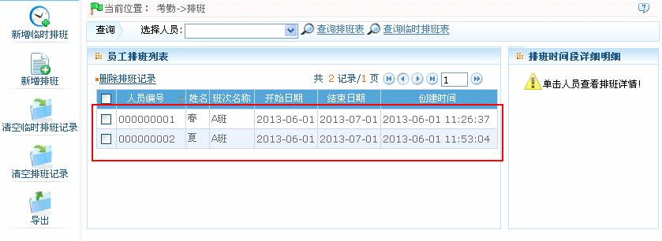
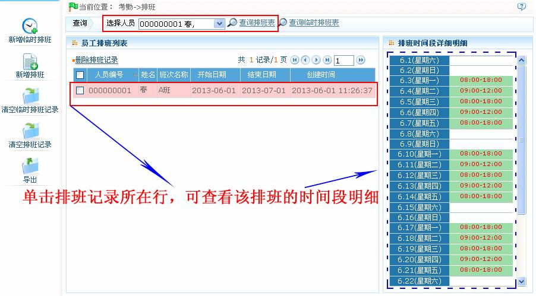
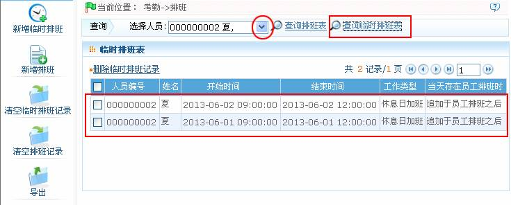
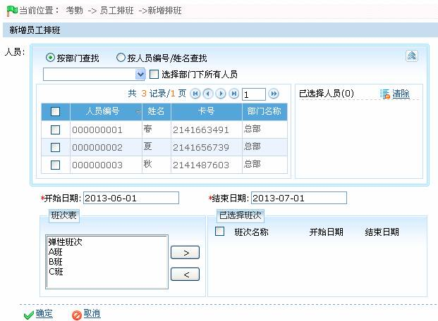
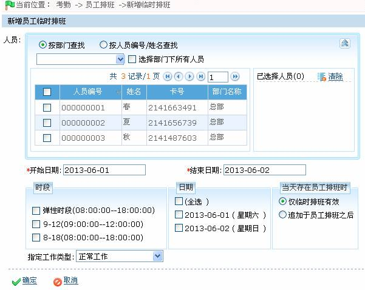
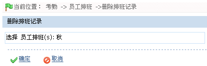
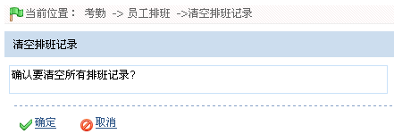

7.5 员工排班
设置好了（考勤）时段和班次以后就可以对人员进行排班了。如果没有给人员排班，则考勤时按弹性班次计算为加班。
员工排班管理包括：查询排班记录、人员排班（新增排班、新增临时排班）和清除排班。
7.5.1 查询排班记录
1、查询排班表
（1）、点击【考勤】 【排班】，进入排班页面，页面默认以列表的形式显示员工排班记录：
【排班】，进入排班页面，页面默认以列表的形式显示员工排班记录：

（2）、单击选择人员后的 按钮，在弹出的人员选择框中，选择需查询排班情况的人员（人员的选择，请参见附录1 常用操作中的1. 人员选择），然后单击【查询排班表】按钮，查看被选中人员的排班信息。在员工排班列表中，单击该员工排班记录所在行，可在页面右边的排班时间段明细框中，查看该排班的时间段明细；或在查询栏处，
按钮，在弹出的人员选择框中，选择需查询排班情况的人员（人员的选择，请参见附录1 常用操作中的1. 人员选择），然后单击【查询排班表】按钮，查看被选中人员的排班信息。在员工排班列表中，单击该员工排班记录所在行，可在页面右边的排班时间段明细框中，查看该排班的时间段明细；或在查询栏处，

2、查询临时排班表
（1）、点击【考勤】 【排班】，进入排班页面。
【排班】，进入排班页面。
（2）、单击选择人员后的 按钮，在弹出的人员选择框中，选择需查询临时排班情况的人员（人员的选择，请参见附录1 常用操作中的1. 人员选择），然后单击【查询临时排班表】按钮，在临时排班表中将显示被选中人员的临时排班信息，如下图所示：
按钮，在弹出的人员选择框中，选择需查询临时排班情况的人员（人员的选择，请参见附录1 常用操作中的1. 人员选择），然后单击【查询临时排班表】按钮，在临时排班表中将显示被选中人员的临时排班信息，如下图所示：

 备注：在临时排班表中无排班时间段详细明细；若不选择人员，则显示所有人员的临时排班信息。
备注：在临时排班表中无排班时间段详细明细；若不选择人员，则显示所有人员的临时排班信息。
7.5.2 人员排班
在排班页面中，用户可以通过新增排班和新增临时排班的方式为人员排班。
1、新增排班
（1）、单击排班页面的【新增排班】图标，进入新增排班页面：

具体设置方法如下：
人员：选择需排班的人员（可多选），人员的选择，请参见附录1 常用操作中的1. 人员选择。
开始日期、结束日期：设置排班的开始和结束日期。日期的选择，请参见附录1 常用操作中的2. 选择日期。
 注意：开始、结束日期默认为本月1号、下月1号。
注意：开始、结束日期默认为本月1号、下月1号。
选择班次：在“班次表”中，选择班次，然后单击按钮移动该班次到“已选择班次”框中。
（2）、设置完成后，单击【确定】按钮，保存并返回排班页面。
 注意：人员排班只能选择一个班次。多次排班时，日期范围相同时只保存最后一次设置。
注意：人员排班只能选择一个班次。多次排班时，日期范围相同时只保存最后一次设置。
2、新增临时排班
临时排班是排班的补充，如临时某个班次需要加班，就需要临时排一（多）个加班的时段进去。临时排班一般是排加班，如晚上的加班、周末加班、节假日加班。
（1）、单击排班页面的【新增临时排班】图标，进入新增临时排班页面：

具体设置方法如下：
人员：选择需临时排班的人员（可多选），人员的选择，请参见附录1 常用操作中的1. 人员选择。
开始日期、结束日期：设置临时排班的开始和结束日期。日期的选择，请参见附录1 常用操作中的2. 选择日期。
时段：选择该临时排班使用的时段（可多选），时段的设置，请参见7.2 考勤时段。
日期：选择需临时排班的日期（可多选），单击打勾即选中。
当天存在员工排班时：设置当天存在员工排班时，是“仅临时排班有效”或“追加于员工排班之后”。
-
 仅临时排班有效：无论员工是否有排班，只以临时排班进行考勤。
仅临时排班有效：无论员工是否有排班，只以临时排班进行考勤。 -
追加于员工排班之后：是对员工排班的补充，此时的考勤数据是员工排班和临时排班的相加，在考勤统计中分两条排班记录显示。
指定工作类型：为该临时排班制定工作类型，可选择为正常工作、平日加班、休息日加班（周末加班）或节假日加班；工作类型为休息日加班、节假日加班时，不计迟到、早退、请假、旷工。
 注意：临时排班可以选择多个考勤时段，且每个时段的起始时间不能相同，选择的时段将作用于所有已选择的日期。
注意：临时排班可以选择多个考勤时段，且每个时段的起始时间不能相同，选择的时段将作用于所有已选择的日期。
（2）、设置完成后，单击【确定】按钮，保存并返回排班页面。
7.5.3 清除排班记录
在本系统中，用户可以根据需要选择需要删除的排班记录来删除，也可以在员工排班页面中，单击【清除排班记录】清除所有的排班记录；单击【清除临时排班记录】清除所有的临时排班记录。
1、一次删除单个或多个“排班记录”
（1）、在员工排班列表中选中需删除的排班记录（可多选）（当存在大量员工排班信息时，可在选择人员后单击 按钮，在弹出的人员选择框中，选择需删除排班记录的人员，然后单击【查询排班表】按钮，精确筛选员工排班记录。），如下图所示：
按钮，在弹出的人员选择框中，选择需删除排班记录的人员，然后单击【查询排班表】按钮，精确筛选员工排班记录。），如下图所示：

（2）、选中排班记录后，单击【删除排班记录】，进入删除排班记录的确认页面：

（3）、单击【确定】按钮，删除被选定的排班记录。
 备注：（1）、一次删除单个或多个“临时排班记录”的操作方法与一次删除单个或多个“排班记录”的一致，此处不再重述；（2）、单击【查询临时排班表】按钮，显示系统中所有的临时排班记录，可通过查询栏筛选人员，以精确显示需删除的临时排班记录，便于员工选择。
备注：（1）、一次删除单个或多个“临时排班记录”的操作方法与一次删除单个或多个“排班记录”的一致，此处不再重述；（2）、单击【查询临时排班表】按钮，显示系统中所有的临时排班记录，可通过查询栏筛选人员，以精确显示需删除的临时排班记录，便于员工选择。
2、一次清空所有排班记录
-
 清空“排班记录”
清空“排班记录”
（1）、单击排班页面上的【清空排班记录】图标，进入清空排班记录的确认页面：

（2）、单击【确定】按钮，确认并清空所有排班记录。
-
清空“临时排班记录”
清空临时排班记录的操作方法，同清空排班记录的方法一致，此处不再重述。